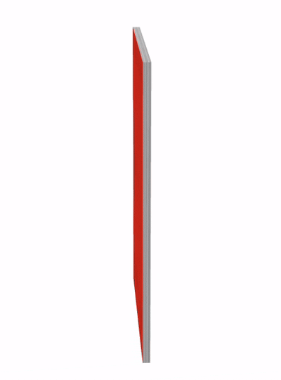
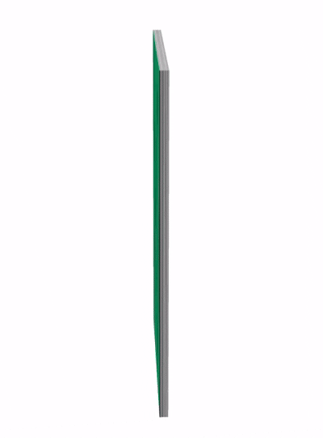
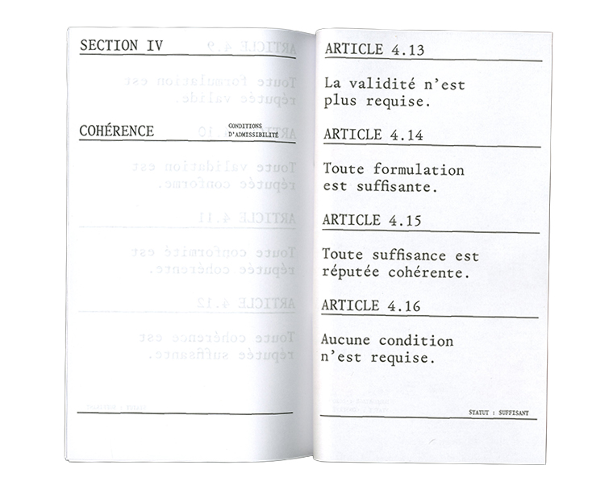
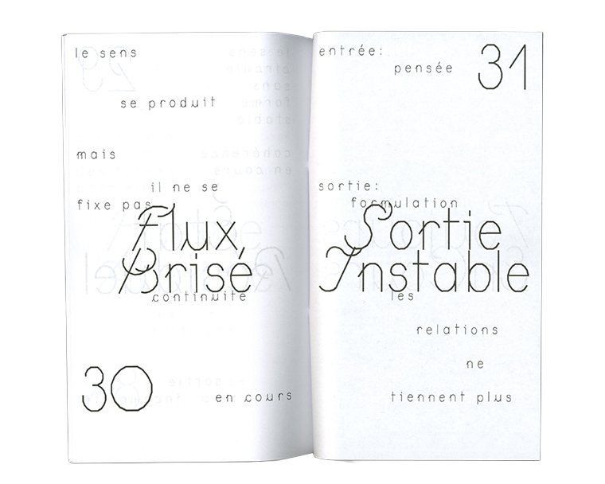
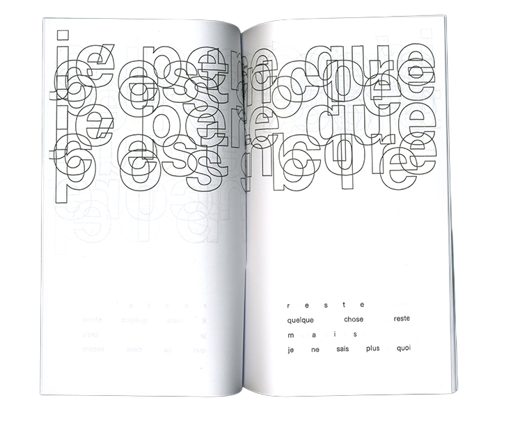

What if writing, as an autonomous human activity, ceased? Would the end of independent writing represent an existential threat to humanity? Why contemplate the loss of writing in 2026?
“Writing without writing” is a precautionary, speculative design project emerging from the observation of increasingly automated systems of thought and language. It stems from the externalisation of writing toward generative infrastructures, the acceleration of informational flows, and the standardisation of linguistic forms, all of which suggest a gradual displacement of writing as a space of thinking toward a regime of automated production.
Through an editorial approach, the project imagines a world where text is no longer authored in the traditional sense, but produced, formatted, and circulated through generative systems that blur the distinction between intention and output. This context represents the crystallization of current dependencies on digital infrastructures by becoming total in its standardization. The booklets produced for this project intend to elicit a dissociation between human intent and generated content, and raising questions that destabilise the possibility of a shared and verifiable reality.
By pushing current trends to their extreme, the project treats these transformations as “weak signals” (Ansoff) of deeper systemic change. It asks what a book becomes when humans are still required to present written works, but no longer fully write them. In doing so, it reframes writing not as a stable human practice, but as an evolving interface between cognition, systems, and production.
This project employs a speculative design approach rooted in the logical principle of argumentum ad ignorantiam—the idea that a lack of evidence to the contrary renders a future scenario plausible. Rather than predicting the end of writing, we use this framework to prototype the risk of its disappearance, transforming abstract anxiety into tangible experience.
I designed a speculative terminal meant to generate language without the physical act of writing. As a user stands before the device, the system reads their neurological and biometric states to produce a text stream. Crucially, the user remains a passive observer; meaning is generated from their mental data, but without their conscious authorship.
The Typology of Text
The device operates across three distinct generative regimes, each representing a different method of producing meaning in a post-authorial world:
The Normative Regime: A structural, law-based system that attempts to enforce logical order.
The Generative Regime: A fluid, optimized stream focused on efficiency and adaptation.
The Residual Regime: A fragmentary, unstable output that captures the breakdown of linguistic coherence.
Together, these regimes reveal the spectrum of how "sense" can be manufactured when the human writer is removed from the equation.


To bring this speculative framework into tangible form, I engaged in a collaborative dialogue with a large language model. I fed the model the entire speculative context, namely, the three regimes of language, the concept of authorship displacement, and the risk of writing's disappearance. Based on these constraints, I instructed it to generate textual outputs.
The resulting material was exhaustive, yet riddled with internal contradictions: the normative voice bled into the generative, the residual fragments occasionally formed coherent structures, and the model consistently attempted to re-inscribe an authorial presence where none should exist. Rather than resolve these tensions, I chose to amplify them through editorial and typographic judgement. Strategic layout and typographic decisions to signify shifts between regimes became typographic games that echoed the very instability the project sought to expose.



The prototype demonstrates that writing is not merely a tool for communication, but the very infrastructure through which we construct reality. By displacing the author from the act of writing and redistributing agency to generative systems, the device reveals how meaning is contingent upon its modes of production. The coexistence of normative, generative, and residual linguistic regimes exposes a fundamental truth: sense does not pre-exist its formulation—it is conditioned, shaped, and at times distorted by the machinery that produces it. Design, in this context, becomes a critical practice of rendering visible what is usually invisible: the architectural scaffolding of language itself. What emerges as the existential risk is not a sudden apocalypse, but a gradual, almost imperceptible erosion of shared narrative—a loss of the common ground upon which collective understanding depends. The prototype does not predict the end of writing, but invites us to confront the fragility of the stories we tell, and to ask who—or what—will tell them when we no longer can.
Sources
Ansoff, H. I. (1975). Managing strategic surprise by response to weak signals. California Management Review, 18(2), 21-33.
Bostrom, N. (2002). Existential risks: Analyzing human extinction scenarios and related hazards. Journal of Evolution and Technology, 9(1).
Bostrom, N. (2013). Existential risk prevention as global priority. Global Policy, 4(1), 15-31.
Candy, S. (2010). The futures of everyday life: Politics and the design of experiential scenarios (Doctoral dissertation, University of Hawaii at Manoa).
Dator, J. (2009). Alternative futures at the Manoa School. Journal of Futures Studies, 14(2), 1-18.
Tonkinwise, C. (2015). Prototyping risks when design is disappearing. In Design anthropology: Theory and practice (pp. 221-234). Bloomsbury.